Propagandic Intent
Propaganda may be used for religious, wartime, advertising, and political affairs. They are used in this case to convince a demographic to believe the propagandist's side or points. For example, Propaganda shares techniques with advertising and public relations, each of which can be thought of as propaganda that promotes a commercial product or shapes the perception of an organization, person, or brand. Journalistic theory generally holds that news items should be objective.
Propaganda was often used to influence opinions and beliefs on religious issues, particularly during the split between the Roman Catholic Church and the Protestant churches. More in line with the religious roots of the term, propaganda is also used widely in the debates about new religious movements (NRMs), both by people who defend them and by people who oppose them. Some social scientists accuse ex-members of "cults" and the anti-cult movement of making these unusual religious movements look bad without sufficient reasons.
Propaganda has become more common in political contexts, in particular to refer to certain efforts sponsored by governments, political groups, but also often covert interests. In the early 20th century, propaganda was exemplified in the form of party slogans Propaganda also has much in common with public information campaigns by governments, which are intended to encourage or discourage certain forms of behavior. Propaganda exists on the political left, and right, and in mainstream centrist parties.
Propaganda is a powerful weapon in war; it is used to dehumanize and create hatred toward a supposed enemy, either internal or external, by creating a false image in the mind of soldiers and citizens. This can be done by using derogatory or racist terms (e.g., the racist terms "Jap" and "gook" used during World War II and the Vietnam War, respectively), avoiding some words or language or by making allegations of enemy atrocities. The goal of this was to demoralize the opponent into thinking what was being projected was actually true.
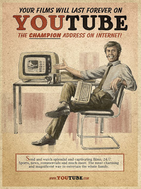 These are all examples of propagandic posters. From top, then left to right: advertising, religious, wartime, and political.A Gallery of Propagandic Posters
Posters of Propaganda, Examples:
A gallery featuring all four realms of propaganda, featuring wartime, political, advertisement, and religious, to an extent. These are all taken from various periods in time.
One must remember that they may either tell the truth or do so in a distorted manner to convince a demographic of their point.
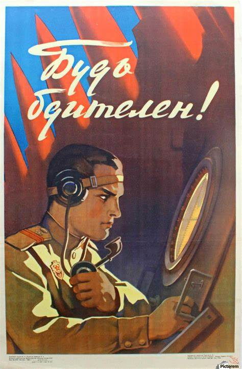 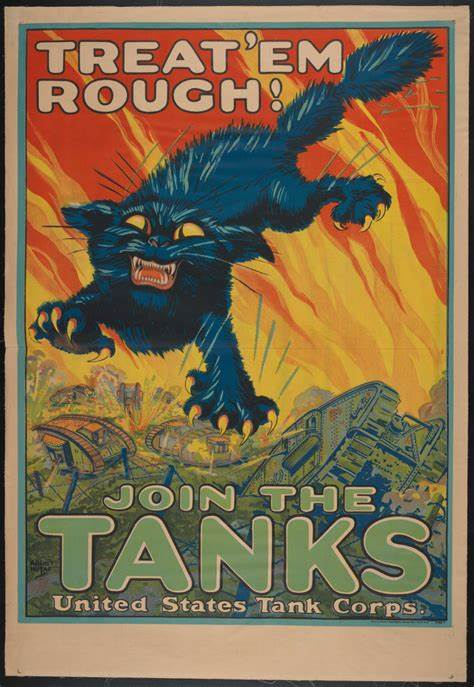


 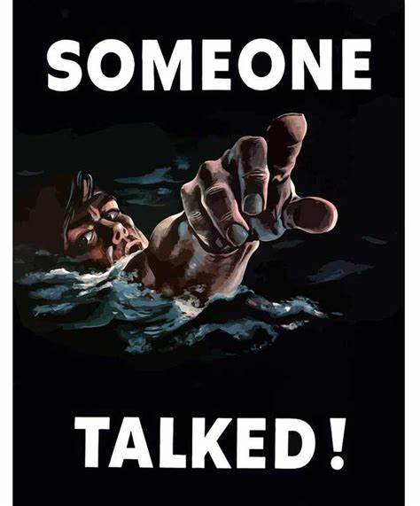
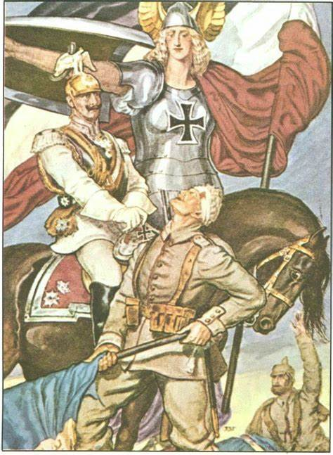
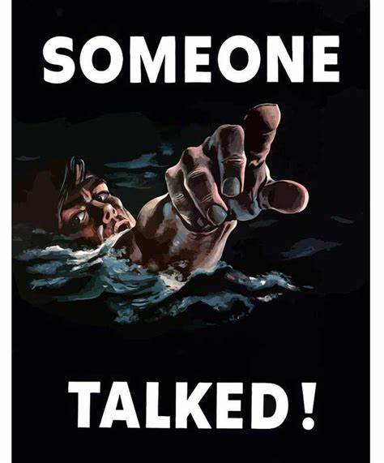
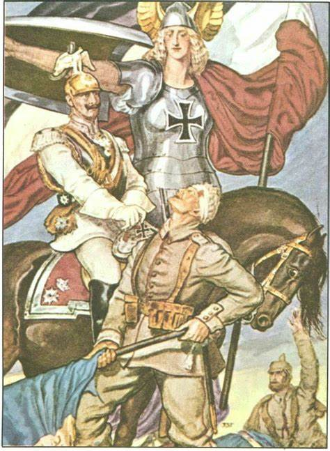
 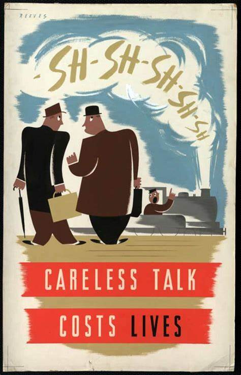
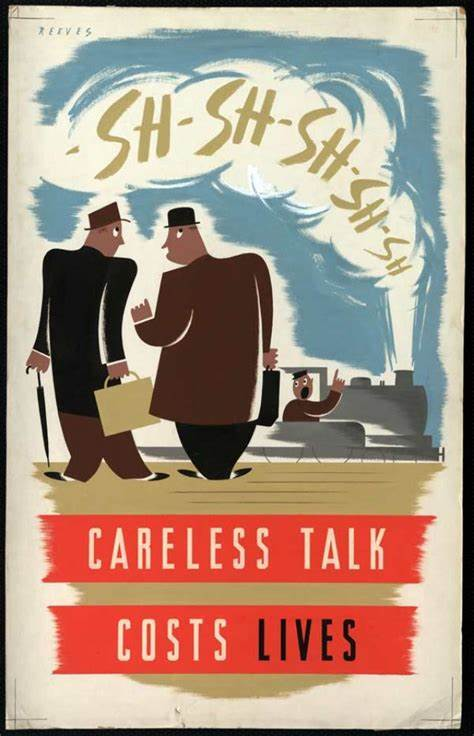

 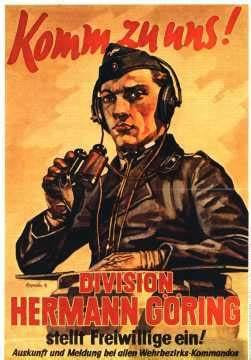
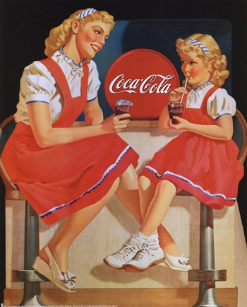
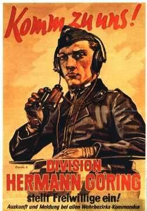
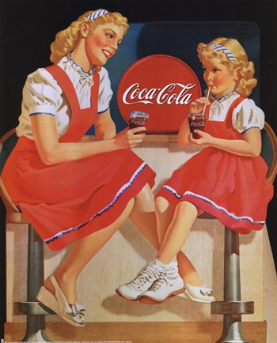
Personal Stance on Propagandic Usage; References
The author considers that propaganda itself is a viable form of media communication. It is essential for many purposes; where people would commonly associate it with evil intentions, they do not realize the advertisements that play out on their 45-inch screens are a form of propaganda themselves.
Propaganda, in and of itself, is acceptable by the author's terms. The author wishes to say that propaganda, for any purpose or usage, and regardless of user, or rather users, is acceptable; given that certain mediums such as campaigns are already propaganda, it would make no sense for the author to decry such usage of a medium of conviction and persuasion.
References
References used: > Smith, Bruce L. (17 February 2016). "Propaganda". Encyclopædia Britannica, Inc. Retrieved 23 April 2016. > Diggs-Brown, Barbara (2011) Strategic Public Relations: Audience Focused Practice p. 48 > Oxford dictionary. > "Online Etymology Dictionary". Retrieved 6 March 2015. > Ellul, Jacques (1965). Introduction by Konrad Kellen in Propaganda: The Formation of Men's Attitudes, pp. xi-xii. > Trans. Konrad Kellen & Jean Lerner from original 1962 French edition Propagandes. Knopf, New York. ISBN 978-0-394-71874-3 (1973 edition by Vintage Books, New York).